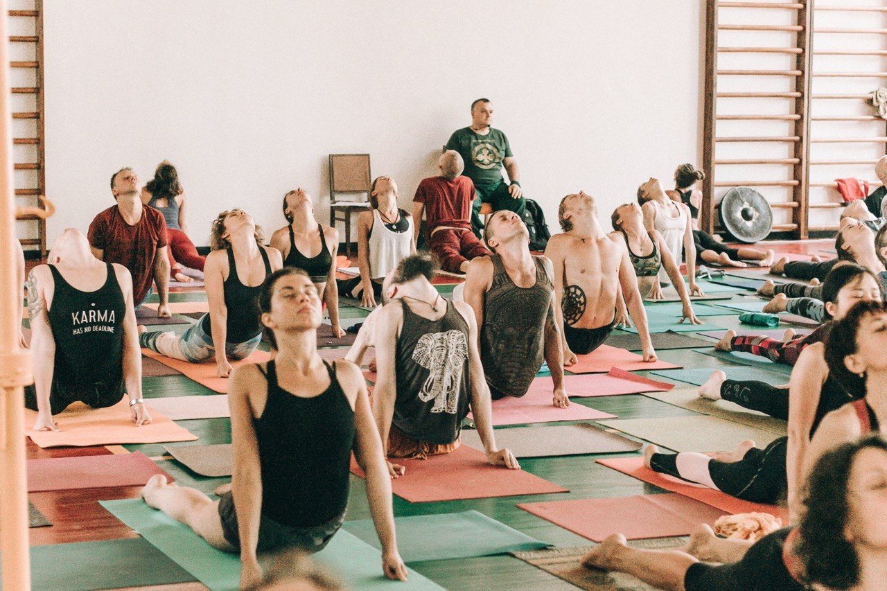

ЧАСТЬ 01 · ВНЕШНИЕ ПРАКТИКИ ЙОГИ
Универсальная асана
Понимание тела, направлений подвижности и универсальных принципов асан. Основа осознанной личной практики и профессионального преподавания.
Первый этап двухчастной программы на 200 часов. Экзамен — в конце каждой части.
Записаться на 1-ю часть
01 Темы теории20 тем
- Суть, определение и цель Йоги на основе ее первоисточников.
- История развития Йоги. Известные древние и современные школы и стили Йоги. Эволюция Йоги в разных странах мира.
- Разновидности развлекательной и тренировочной “йоги” — цели и причины возникновения.
- Универсальная йога. Комплекс оболочек – Майя Кош. Отличительные особенности.
- Шива-Ната – Танец-Шивы – Древний и современный метод контроля внимания и освобождения сознания. Структура практики первого уровня сложности.
- Теоретические и фактические направления подвижности основных суставов, их выполнимое количество.
- Универсальная схема любых Асан.
- Анализ существующих Асан. Причины реформирования Асан авторитетными учителями. Осознание и усовершенствования известных Асан.
- Творческое создание и название новых Асан.
- Правила травмобезопасности практики Асан.
- Правила расстановок и дотяжек в Асанах.
- Отличительные особенности одной и той же Асаны в разных пространственных положениях.
- Методы устранения несимметричного развития тела с помощью практики Асан.
- Асаны, развивающие гибкость всех направлений подвижности суставов и их уровни сложности.
- Асаны, развивающие статическую силу и их уровни сложности.
- Малакамб - практика Асан на йоговском столбе и канате.
- Асаны, развивающие равновесие и их уровни сложности.
- Словарь санскрита для профессиональных преподавателей Йоги.
- Каллиграфия Йоги. Символика и грамматика Йоги. Универсальные правила работы с информацией.
- Ответы на вопросы.
02 Ежедневная практика12 дней
- ДЕНЬ 01Восходящий поток, Т-структура статической последовательности.
- ДЕНЬ 02Нисходящий поток, Т-структура статической последовательности.
- ДЕНЬ 03Мандала 2 Квадрата, Статико-Динамическая последовательность.
- ДЕНЬ 04Мандала 8-ми-проекционного креста, 74 Асаны.
- ДЕНЬ 05Мандала 8-ми-проекционного креста, 74 Асаны (контрольная практика)
- ДЕНЬ 06Статическая (40 Асан) и Динамическая (32 Виньясы) Силовые последовательности.
- ДЕНЬ 07Последовательность Балансовых Асан и Динамических Пранаям.
- ДЕНЬ 08Три одновременные последовательности трех уровней сложности.
- ДЕНЬ 09Практика правок основных Асан.
- ДЕНЬ 10Практика правок основных Асан.
- ДЕНЬ 11Подготовка к экзамену.
- ДЕНЬ 12Практический и теоретический экзамены.